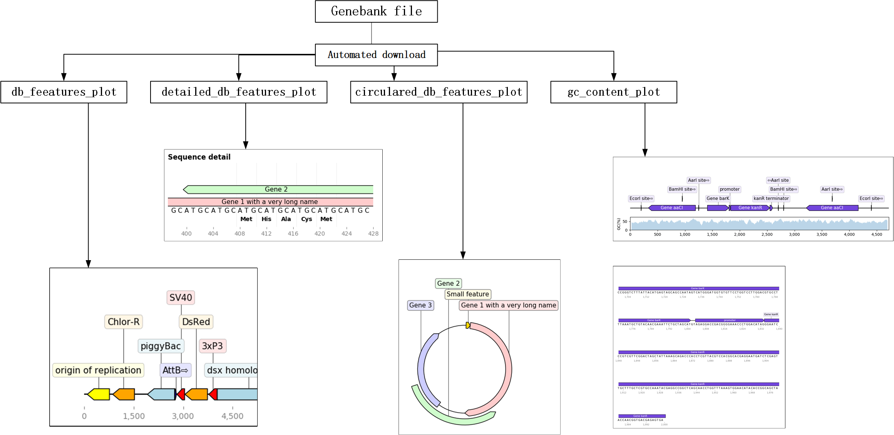

1.2. DNA注释自动化绘图（By 王頔）¶
1.2.1. software installment¶
本软件在dna-features-viewer的基础上进行了二次开发。其依赖的软件包包括：dna_features_viewer、bokeh、pandas和bcbio-gff。建议在anaconda环境基础上进行。 建议参考资料：
pip install dna_features_viewer
pip install bokeh
pip install pandas
pip install bcbio-gff
将两个py文件放到当前文件夹或者python搜索路径即可。
1.2.2. 核心功能及用法¶
1.2.2.1. Gff_object¶
本对象可以实现基因位置、类型等信息的快速绘制。 该对象包含9个属性：
ID，代表序列ID，通常是染色体的ID，每条染色体拥有一个唯一的ID。默认值为：‘chrom1’
Source，代表基因结构的来源，可以是数据库的名称，比如来自genebank数据库也可以是软件的名称，比如用Genescan软件预测得到，当然，也可以为空，用．点号填充。默认值为：‘custom’
type，代表区间对应的特征类型，比如gene , exon等。默认值为：‘backbone’
start，代表区间的起始位置。默认值为：0
end，代表区间的终止位置。默认值为：1
score，软件提供了统计值，如果没有，就用．填充。默认值为：‘.’
strand，代表正负链的信息，+表示正链，-表示负链，?表示不清楚正负链的信息，当正负链信息没有意义时，可以用﹒填充。默认值为：‘+’
phase，当描述的是CDS区间信息时，需要指定翻译时开始的位置，取值范围包括0，1，2。默认值为：‘.’
name,默认值为：‘None_name’
1.2.2.1.1. 核心方法¶
object_quick_define(a,b,c)
用途：用于快速生成一个Gff_Object对象
参数： a:int类型，基因的起始位置 b:int类型，基因的终止位置 c:字符串类型，基因的名称
输出： 输出一个含有基因起始位置a、基因终止位置b和基因名称c的Gff_Object默认对象
gff_write(a)
用途：用于将生成的Gff_object对象写入Gff文件 参数： a：如果省略，则追加一个新对象；如果为’w’则重新写入
object_delete(self)
用途：根据Gff_object的name 属性将对象进行删除
txt_generation()
用途：方法类属性，将Gff对象信息汇总成gff格式描述方式
simple_plot()
用途：绘制简易图
stick_figure_plot
用途：绘制指示功能模块的简易图
1.2.2.1.2. 简单案例¶
from quick_class_plot_WD import Gff_Object
# 导入quick_class_plot包
xia=Gff_Object()
# 建立一个Gff_Object对象
xia.object_quick_define(200,300,'Gene A')
xia.gff_write('w')
# 绘制一个从200bp到300bp的基因A，并写入gff文件
xia.object_quick_define(400,425,'promoter')
xia.label='promoter'
xia.gff_write()
# 在400bp到425bp绘制一个启动子，并将其写入
xia.object_quick_define(425,500,'GeneB')
xia.strand='-'
xia.gff_write()
# 绘制一个从425bp到500bp的基因B，位于负链，并写入gff文件
Gff_Object.simple_plot()
#绘制具有指示功能模块的简易图
xia.stick_figure_plot(xia.ID, 0, 500)
# 由于stick figure中不含有backbone，如果有backbone，那么就不绘制图案
# 为了美观，可在Gff_object后面加上labelsize=字符串大小，调整标注字体大小
1.2.2.2. gb_features_plot¶
本函数可以基于genebank文件，进行自动绘制。与Gff_object相比，更加的简单。只需要了解7个函数即可（也就是6种绘图方式）
1.2.2.2.1. 核心用法¶
file = file_get()
用途：用于自动下载或打开本地gb文件
如果以NCBI的基因号，则自动下载；如果无参数，则通过文件对话框，打开本地文件
db_feeatures_plot(file)
用途：直接绘制gb文件的特征图
参数：file为gb文件的路径，类型为字符串
detailed_db_features_plot(file, a, b)
用途：绘制详细的特征图
参数：file为gb文件的路径，类型为字符串 a为所关注基因的起始位置，类型为int b为所关注基因的终止位置，类型为int
circulared_db_features_plot(file)
用途：绘制圆形的特征图
参数：file为gb文件的路径，类型为字符串
gc_content_plot(file)
用途：绘制包含基因特征和gc含量的图片
参数：file为gb文件的路径，类型为字符串
mult_line_page_plot(file)
用途：绘制详细基因信息，并导出pdf格式（也可以直接修改为想要的输出格式）
参数：file为gb文件的路径，类型为字符串
1.2.2.2.2. 简单案例¶
from gb_features_plot import *
file = file_get() #通过对话框打开带有注释的gb文件
db_feeatures_plot(file)
detailed_db_features_plot(file, 200, 250)
circulared_db_features_plot(file)
gc_content_plot(file)
mult_line_page_plot(file)
os.startfile("multiline_plot.pdf") # 输出为pdf格式